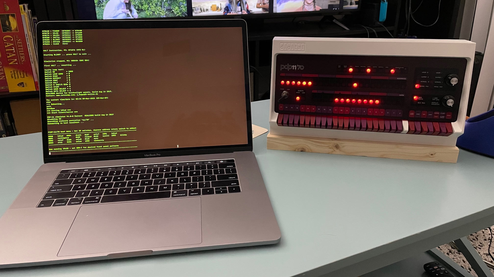

PDP-11: Programming like it's 1975
In April of 2023 I acquired the popular PiDP-11 kit from Oscar here. It is currently my favorite machine to program for. Here's a picture of me running a sample program for the first time.

Programming the Hard Way
I wanted to immediately start programming, so I started by entering sample programs I found online into memory using the switches located on the front of the unit. This is not an ideal long term solution, but it has taught me a lot so far.
To start messing with memory after boot up, do the following:
- Boot into the sample blinking lights program
- Move the "ENABLE/HALT" switch down to halt the current program
- Depress the "LOAD ADRS" switch to load address 0000008
- Start entering opcodes and data
This is the short and simple version of events. I will explain more as we go.
Resources
Here are some good resources I have found:
- Book: "Introduction to the PDP-11 and its Assembly Language" by Thomas S. Frank
- Website: bitsavers.org's DEC manuals archive
- YouTube: DEC's "Introduction to the PDP-11" tape series archive
- YouTube: Douglas Harm's "Programming the PDP-11" video series
Source code for all of my PDP-11 programs can be found on this GitHub page.